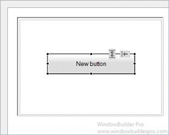
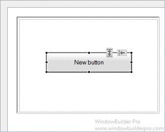
A LayoutPanel implements an constraint-based layout manager. With constraint-based layout, you have independent control over the sizing behavior of each of the four sides of a widget. The top, bottom, left, and right sides can be independently attached to the sides of the panel using either fixed offsets. This proves to be surprisingly powerful and can be used to emulate many of the other panel types. The LayoutPanel class is very simple and only specifies the margins of the container.
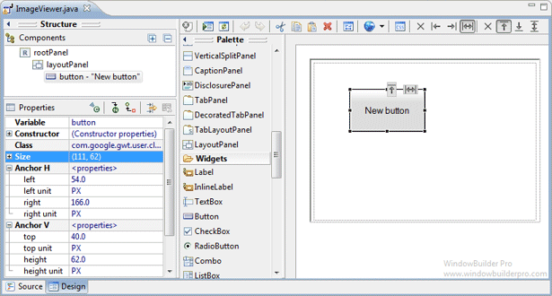
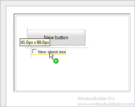 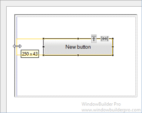
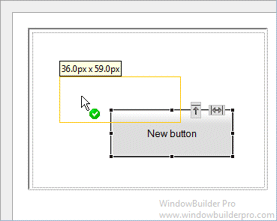 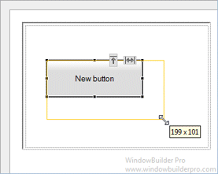
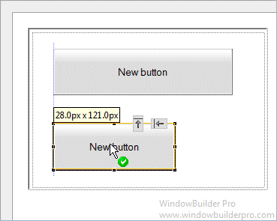 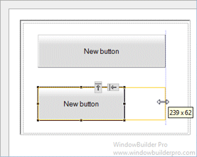
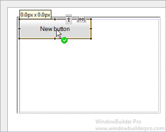 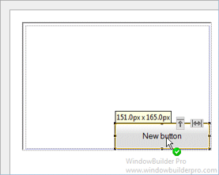
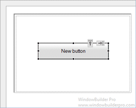 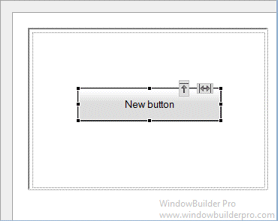
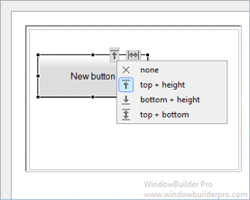 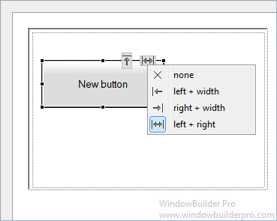